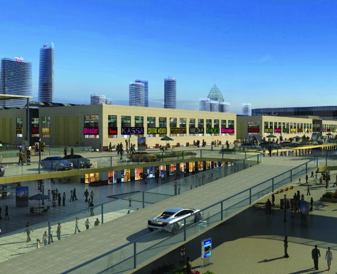

合肥华南城小商品-副食品交易中心可营业面积为20万平方米，致力于打造长三角首席小商品-副食品产业聚集地，涵盖整个产业链的上、中、下游供应链，同时与合肥华南城二期12万方食品城联动经营，填补合肥市区现有食品专业市场的空白，整合并将吸引老旧农批市场及周边小市场从事食品百货批发、零售经营的商户以及具有自主品牌的中高端生产、供应商家，倾力打造一个规模化、专业化、配套齐全、安徽最大、合肥唯一、辐射整个华东地区的食品批发市场
合肥华南城一期20万方小商品-副食品交易中心，位于华二路与国三路交口，由东向西分别毗邻食品城、服装交易中心、皮革服装城，南面为规划建设的会展中心，全面建成后将充分利用华南城专业的会展模式，通过举办各种糖酒专卖会、炒货展为广大食品企业提供参展机会，为行业经销商提供最理想的采购平台。
2014年9月16日，合肥市华南城食品商会正式成立，携手华南城共同打造合肥华南城•食品城，依托华南城全国联动的品牌布局，以打造长三角最大规模的食品产业集散中心为宗旨，全新塑造食品招商、销售、采购模式，将合肥打造成为长三角区最具影响力的食品交易中心、展览中心、文化中心，全力促进食品经济飞速发展。